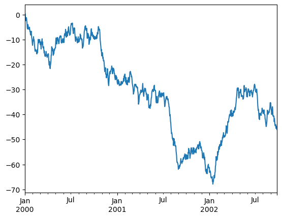

import pandas as pdIntroduction to Pandas
import numpy as npPandas
- Series
- DataFrame
s = pd.Series([1, 3, 5, np.nan, 6, 8])s0 1.0
1 3.0
2 5.0
3 NaN
4 6.0
5 8.0
dtype: float64dates = pd.date_range("20130101", periods=6)datesDatetimeIndex(['2013-01-01', '2013-01-02', '2013-01-03', '2013-01-04',
'2013-01-05', '2013-01-06'],
dtype='datetime64[ns]', freq='D')df = pd.DataFrame(np.random.rand(6,4), index=dates,
columns=list("ABCD"))df| A | B | C | D | |
|---|---|---|---|---|
| 2013-01-01 | 0.501461 | 0.130345 | 0.229421 | 0.465291 |
| 2013-01-02 | 0.939781 | 0.723002 | 0.000828 | 0.889367 |
| 2013-01-03 | 0.918302 | 0.127217 | 0.700967 | 0.384033 |
| 2013-01-04 | 0.727648 | 0.420577 | 0.386597 | 0.487347 |
| 2013-01-05 | 0.553077 | 0.663846 | 0.281396 | 0.464055 |
| 2013-01-06 | 0.123874 | 0.498903 | 0.046609 | 0.876010 |
pd.DataFrame(np.random.rand(6,4),
columns=list("ABCD"))| A | B | C | D | |
|---|---|---|---|---|
| 0 | 0.370312 | 0.766785 | 0.856606 | 0.574230 |
| 1 | 0.477143 | 0.770306 | 0.154779 | 0.427858 |
| 2 | 0.604037 | 0.747945 | 0.132992 | 0.262011 |
| 3 | 0.671085 | 0.679174 | 0.381207 | 0.954910 |
| 4 | 0.662184 | 0.029351 | 0.363693 | 0.170847 |
| 5 | 0.760570 | 0.711854 | 0.091584 | 0.687423 |
np.random.rand(3, 2)array([[0.31089479, 0.7735978 ],
[0.82751496, 0.83485609],
[0.86671021, 0.99840853]])np.random.rand?Docstring: rand(d0, d1, ..., dn) Random values in a given shape. .. note:: This is a convenience function for users porting code from Matlab, and wraps `random_sample`. That function takes a tuple to specify the size of the output, which is consistent with other NumPy functions like `numpy.zeros` and `numpy.ones`. Create an array of the given shape and populate it with random samples from a uniform distribution over ``[0, 1)``. Parameters ---------- d0, d1, ..., dn : int, optional The dimensions of the returned array, must be non-negative. If no argument is given a single Python float is returned. Returns ------- out : ndarray, shape ``(d0, d1, ..., dn)`` Random values. See Also -------- random Examples -------- >>> np.random.rand(3,2) array([[ 0.14022471, 0.96360618], #random [ 0.37601032, 0.25528411], #random [ 0.49313049, 0.94909878]]) #random Type: builtin_function_or_method
df| A | B | C | D | |
|---|---|---|---|---|
| 2013-01-01 | 0.501461 | 0.130345 | 0.229421 | 0.465291 |
| 2013-01-02 | 0.939781 | 0.723002 | 0.000828 | 0.889367 |
| 2013-01-03 | 0.918302 | 0.127217 | 0.700967 | 0.384033 |
| 2013-01-04 | 0.727648 | 0.420577 | 0.386597 | 0.487347 |
| 2013-01-05 | 0.553077 | 0.663846 | 0.281396 | 0.464055 |
| 2013-01-06 | 0.123874 | 0.498903 | 0.046609 | 0.876010 |
df.dtypesA float64
B float64
C float64
D float64
dtype: objectdf2 = pd.DataFrame(
{
"A": 1.0,
"B": pd.Timestamp("20130102"),
"C": pd.Series(1, index=list(range(4)), dtype='float32'),
"D": np.array([3] * 4, dtype='int32'),
"E": pd.Categorical(['test', 'train', 'test', 'train']),
"F": 'foo',
}
)
df2| A | B | C | D | E | F | |
|---|---|---|---|---|---|---|
| 0 | 1.0 | 2013-01-02 | 1.0 | 3 | test | foo |
| 1 | 1.0 | 2013-01-02 | 1.0 | 3 | train | foo |
| 2 | 1.0 | 2013-01-02 | 1.0 | 3 | test | foo |
| 3 | 1.0 | 2013-01-02 | 1.0 | 3 | train | foo |
df2.dtypesA float64
B datetime64[s]
C float32
D int32
E category
F object
dtype: objectdf.head()| A | B | C | D | |
|---|---|---|---|---|
| 2013-01-01 | 0.501461 | 0.130345 | 0.229421 | 0.465291 |
| 2013-01-02 | 0.939781 | 0.723002 | 0.000828 | 0.889367 |
| 2013-01-03 | 0.918302 | 0.127217 | 0.700967 | 0.384033 |
| 2013-01-04 | 0.727648 | 0.420577 | 0.386597 | 0.487347 |
| 2013-01-05 | 0.553077 | 0.663846 | 0.281396 | 0.464055 |
df.tail()| A | B | C | D | |
|---|---|---|---|---|
| 2013-01-02 | 0.939781 | 0.723002 | 0.000828 | 0.889367 |
| 2013-01-03 | 0.918302 | 0.127217 | 0.700967 | 0.384033 |
| 2013-01-04 | 0.727648 | 0.420577 | 0.386597 | 0.487347 |
| 2013-01-05 | 0.553077 | 0.663846 | 0.281396 | 0.464055 |
| 2013-01-06 | 0.123874 | 0.498903 | 0.046609 | 0.876010 |
df.indexDatetimeIndex(['2013-01-01', '2013-01-02', '2013-01-03', '2013-01-04',
'2013-01-05', '2013-01-06'],
dtype='datetime64[ns]', freq='D')df2.indexIndex([0, 1, 2, 3], dtype='int64')df| A | B | C | D | |
|---|---|---|---|---|
| 2013-01-01 | 0.501461 | 0.130345 | 0.229421 | 0.465291 |
| 2013-01-02 | 0.939781 | 0.723002 | 0.000828 | 0.889367 |
| 2013-01-03 | 0.918302 | 0.127217 | 0.700967 | 0.384033 |
| 2013-01-04 | 0.727648 | 0.420577 | 0.386597 | 0.487347 |
| 2013-01-05 | 0.553077 | 0.663846 | 0.281396 | 0.464055 |
| 2013-01-06 | 0.123874 | 0.498903 | 0.046609 | 0.876010 |
df.describe()| A | B | C | D | |
|---|---|---|---|---|
| count | 6.000000 | 6.000000 | 6.000000 | 6.000000 |
| mean | 0.627357 | 0.427315 | 0.274303 | 0.594351 |
| std | 0.305672 | 0.255655 | 0.254303 | 0.226134 |
| min | 0.123874 | 0.127217 | 0.000828 | 0.384033 |
| 25% | 0.514365 | 0.202903 | 0.092312 | 0.464364 |
| 50% | 0.640363 | 0.459740 | 0.255408 | 0.476319 |
| 75% | 0.870639 | 0.622610 | 0.360297 | 0.778844 |
| max | 0.939781 | 0.723002 | 0.700967 | 0.889367 |
df.sort_values(by='B')| A | B | C | D | |
|---|---|---|---|---|
| 2013-01-03 | 0.918302 | 0.127217 | 0.700967 | 0.384033 |
| 2013-01-01 | 0.501461 | 0.130345 | 0.229421 | 0.465291 |
| 2013-01-04 | 0.727648 | 0.420577 | 0.386597 | 0.487347 |
| 2013-01-06 | 0.123874 | 0.498903 | 0.046609 | 0.876010 |
| 2013-01-05 | 0.553077 | 0.663846 | 0.281396 | 0.464055 |
| 2013-01-02 | 0.939781 | 0.723002 | 0.000828 | 0.889367 |
df.sort_values(by='B', ascending=False)| A | B | C | D | |
|---|---|---|---|---|
| 2013-01-02 | 0.939781 | 0.723002 | 0.000828 | 0.889367 |
| 2013-01-05 | 0.553077 | 0.663846 | 0.281396 | 0.464055 |
| 2013-01-06 | 0.123874 | 0.498903 | 0.046609 | 0.876010 |
| 2013-01-04 | 0.727648 | 0.420577 | 0.386597 | 0.487347 |
| 2013-01-01 | 0.501461 | 0.130345 | 0.229421 | 0.465291 |
| 2013-01-03 | 0.918302 | 0.127217 | 0.700967 | 0.384033 |
selection
df['C']2013-01-01 0.229421
2013-01-02 0.000828
2013-01-03 0.700967
2013-01-04 0.386597
2013-01-05 0.281396
2013-01-06 0.046609
Freq: D, Name: C, dtype: float64df[['C', 'D']]| C | D | |
|---|---|---|
| 2013-01-01 | 0.229421 | 0.465291 |
| 2013-01-02 | 0.000828 | 0.889367 |
| 2013-01-03 | 0.700967 | 0.384033 |
| 2013-01-04 | 0.386597 | 0.487347 |
| 2013-01-05 | 0.281396 | 0.464055 |
| 2013-01-06 | 0.046609 | 0.876010 |
df[['D', 'C']]| D | C | |
|---|---|---|
| 2013-01-01 | 0.465291 | 0.229421 |
| 2013-01-02 | 0.889367 | 0.000828 |
| 2013-01-03 | 0.384033 | 0.700967 |
| 2013-01-04 | 0.487347 | 0.386597 |
| 2013-01-05 | 0.464055 | 0.281396 |
| 2013-01-06 | 0.876010 | 0.046609 |
df| A | B | C | D | |
|---|---|---|---|---|
| 2013-01-01 | 0.501461 | 0.130345 | 0.229421 | 0.465291 |
| 2013-01-02 | 0.939781 | 0.723002 | 0.000828 | 0.889367 |
| 2013-01-03 | 0.918302 | 0.127217 | 0.700967 | 0.384033 |
| 2013-01-04 | 0.727648 | 0.420577 | 0.386597 | 0.487347 |
| 2013-01-05 | 0.553077 | 0.663846 | 0.281396 | 0.464055 |
| 2013-01-06 | 0.123874 | 0.498903 | 0.046609 | 0.876010 |
df[0:3] # selection by location| A | B | C | D | |
|---|---|---|---|---|
| 2013-01-01 | 0.501461 | 0.130345 | 0.229421 | 0.465291 |
| 2013-01-02 | 0.939781 | 0.723002 | 0.000828 | 0.889367 |
| 2013-01-03 | 0.918302 | 0.127217 | 0.700967 | 0.384033 |
# select by label
df.loc[:, ['A', 'C']]| A | C | |
|---|---|---|
| 2013-01-01 | 0.501461 | 0.229421 |
| 2013-01-02 | 0.939781 | 0.000828 |
| 2013-01-03 | 0.918302 | 0.700967 |
| 2013-01-04 | 0.727648 | 0.386597 |
| 2013-01-05 | 0.553077 | 0.281396 |
| 2013-01-06 | 0.123874 | 0.046609 |
df.loc[dates[0]] # return the records that match the first datestamA 0.501461
B 0.130345
C 0.229421
D 0.465291
Name: 2013-01-01 00:00:00, dtype: float64dates[0]Timestamp('2013-01-01 00:00:00')type(dates)pandas.core.indexes.datetimes.DatetimeIndexdf.loc[dates[0], ['A','C']]A 0.501461
C 0.229421
Name: 2013-01-01 00:00:00, dtype: float64Boolean indexing
df| A | B | C | D | |
|---|---|---|---|---|
| 2013-01-01 | 0.501461 | 0.130345 | 0.229421 | 0.465291 |
| 2013-01-02 | 0.939781 | 0.723002 | 0.000828 | 0.889367 |
| 2013-01-03 | 0.918302 | 0.127217 | 0.700967 | 0.384033 |
| 2013-01-04 | 0.727648 | 0.420577 | 0.386597 | 0.487347 |
| 2013-01-05 | 0.553077 | 0.663846 | 0.281396 | 0.464055 |
| 2013-01-06 | 0.123874 | 0.498903 | 0.046609 | 0.876010 |
df['B']2013-01-01 0.130345
2013-01-02 0.723002
2013-01-03 0.127217
2013-01-04 0.420577
2013-01-05 0.663846
2013-01-06 0.498903
Freq: D, Name: B, dtype: float64df.B2013-01-01 0.130345
2013-01-02 0.723002
2013-01-03 0.127217
2013-01-04 0.420577
2013-01-05 0.663846
2013-01-06 0.498903
Freq: D, Name: B, dtype: float64df.B > .52013-01-01 False
2013-01-02 True
2013-01-03 False
2013-01-04 False
2013-01-05 True
2013-01-06 False
Freq: D, Name: B, dtype: booldf[df.B > .5]| A | B | C | D | |
|---|---|---|---|---|
| 2013-01-02 | 0.939781 | 0.723002 | 0.000828 | 0.889367 |
| 2013-01-05 | 0.553077 | 0.663846 | 0.281396 | 0.464055 |
df2 = df.copy()
df2| A | B | C | D | |
|---|---|---|---|---|
| 2013-01-01 | 0.501461 | 0.130345 | 0.229421 | 0.465291 |
| 2013-01-02 | 0.939781 | 0.723002 | 0.000828 | 0.889367 |
| 2013-01-03 | 0.918302 | 0.127217 | 0.700967 | 0.384033 |
| 2013-01-04 | 0.727648 | 0.420577 | 0.386597 | 0.487347 |
| 2013-01-05 | 0.553077 | 0.663846 | 0.281396 | 0.464055 |
| 2013-01-06 | 0.123874 | 0.498903 | 0.046609 | 0.876010 |
df2['E'] = ['one', 'one', 'two', 'three', 'four', 'three']
df2| A | B | C | D | E | |
|---|---|---|---|---|---|
| 2013-01-01 | 0.501461 | 0.130345 | 0.229421 | 0.465291 | one |
| 2013-01-02 | 0.939781 | 0.723002 | 0.000828 | 0.889367 | one |
| 2013-01-03 | 0.918302 | 0.127217 | 0.700967 | 0.384033 | two |
| 2013-01-04 | 0.727648 | 0.420577 | 0.386597 | 0.487347 | three |
| 2013-01-05 | 0.553077 | 0.663846 | 0.281396 | 0.464055 | four |
| 2013-01-06 | 0.123874 | 0.498903 | 0.046609 | 0.876010 | three |
df2['E'].isin(["one", "two"])2013-01-01 True
2013-01-02 True
2013-01-03 True
2013-01-04 False
2013-01-05 False
2013-01-06 False
Freq: D, Name: E, dtype: booldf2[df2['E'].isin(["one", "two"])]| A | B | C | D | E | |
|---|---|---|---|---|---|
| 2013-01-01 | 0.501461 | 0.130345 | 0.229421 | 0.465291 | one |
| 2013-01-02 | 0.939781 | 0.723002 | 0.000828 | 0.889367 | one |
| 2013-01-03 | 0.918302 | 0.127217 | 0.700967 | 0.384033 | two |
df2[df2['E'].isin(["one", "two", 'four'])]| A | B | C | D | E | |
|---|---|---|---|---|---|
| 2013-01-01 | 0.501461 | 0.130345 | 0.229421 | 0.465291 | one |
| 2013-01-02 | 0.939781 | 0.723002 | 0.000828 | 0.889367 | one |
| 2013-01-03 | 0.918302 | 0.127217 | 0.700967 | 0.384033 | two |
| 2013-01-05 | 0.553077 | 0.663846 | 0.281396 | 0.464055 | four |
df2[~df2['E'].isin(["one", "two", 'four'])]| A | B | C | D | E | |
|---|---|---|---|---|---|
| 2013-01-04 | 0.727648 | 0.420577 | 0.386597 | 0.487347 | three |
| 2013-01-06 | 0.123874 | 0.498903 | 0.046609 | 0.876010 | three |
Group by
df2| A | B | C | D | E | |
|---|---|---|---|---|---|
| 2013-01-01 | 0.501461 | 0.130345 | 0.229421 | 0.465291 | one |
| 2013-01-02 | 0.939781 | 0.723002 | 0.000828 | 0.889367 | one |
| 2013-01-03 | 0.918302 | 0.127217 | 0.700967 | 0.384033 | two |
| 2013-01-04 | 0.727648 | 0.420577 | 0.386597 | 0.487347 | three |
| 2013-01-05 | 0.553077 | 0.663846 | 0.281396 | 0.464055 | four |
| 2013-01-06 | 0.123874 | 0.498903 | 0.046609 | 0.876010 | three |
df2.groupby(by='E').count()| A | B | C | D | |
|---|---|---|---|---|
| E | ||||
| four | 1 | 1 | 1 | 1 |
| one | 2 | 2 | 2 | 2 |
| three | 2 | 2 | 2 | 2 |
| two | 1 | 1 | 1 | 1 |
Plotting
import matplotlib.pyplot as pltnp.random.seed(123456)ts = pd.Series(np.random.randn(1000), index=pd.date_range("1/1/2000", periods=1000))ts = ts.cumsum()ts.plot()